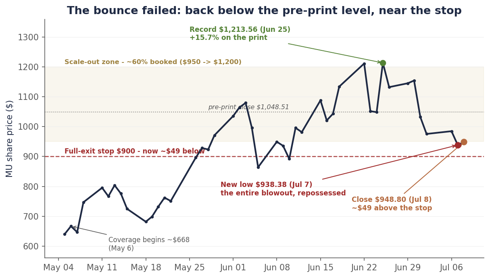
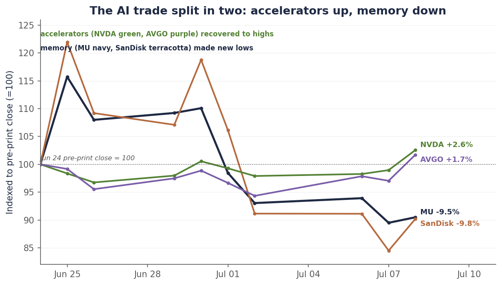
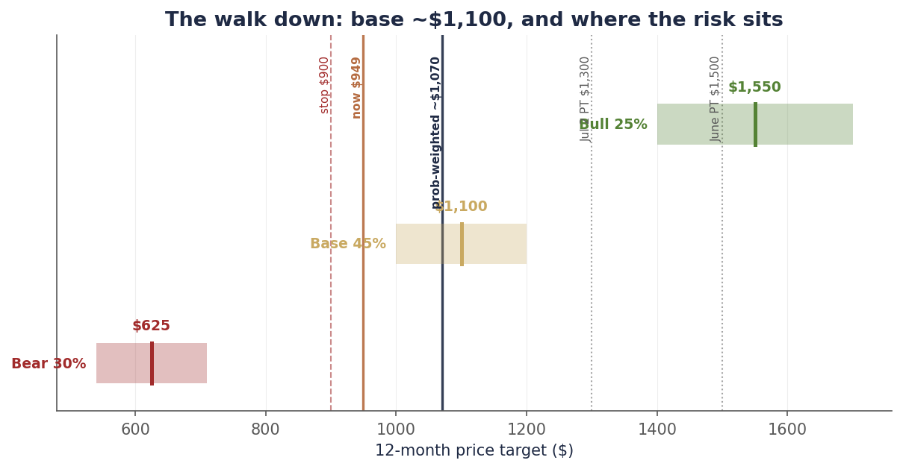

Single-name update · Memory · The reckoning
Samsung posted the biggest profit in the world. Memory made new lows. That’s the tell.
On Monday we wrote that Micron bounced least in the memory complex because of an overhang the market could date — Friday’s SK hynix listing — and that Tuesday’s Samsung print would be the test of whether the earnings were real. The test came back emphatic: Samsung guided to preliminary Q2 operating profit of ₩89.4 trillion — about $58 billion at roughly ₩1,530 to the dollar — up more than eighteen-fold year over year: the biggest quarterly operating profit in the world, edging past Nvidia’s ~$53.5 billion record. And Samsung shares fell about 7%. Micron fell 4.7% on Tuesday to a new low of $938.38, below its July 2 bottom, and closed at $948.80 Wednesday. The doubt was resolved with numbers, and the market sold the numbers.
That is the whole story in one move. When the best earnings news the industry will ever print cannot lift the stocks, the argument was never about the quarter — it is about the forward. And the forward has three dated pieces this week: SK hynix begins trading on Nasdaq Friday, ending Micron’s only-US-listed-memory scarcity premium for good; the accelerator names climbed (Nvidia to $204, Broadcom to $389) while memory made new lows, splitting the AI trade cleanly in two; and Michael Burry disclosed a Micron short near $1,050 on his Substack, calling it “a destroyer of capital.” One Yahoo headline summed the week: memory just entered a bear market.
So we do the honest thing and mark our own book to it. This is the third cut to our Micron target in two weeks — $1,500 in June, ~$1,300 on July 2, and now ~$1,100 — the output of a full post-crash re-underwrite. It is a multiple cut, not an earnings cut, and we walk every input below. At $948.80 the stock is roughly fairly priced for the risk; the asymmetry we bought at $668 is spent. We hold the runner behind the $900 line we drew weeks ago — now ~$49 away — we add nothing to Micron, and we explain why, into the crash, we bought the memory basket and initiated ASML instead.
Chart 1 — The bounce failed
From the $1,213.56 record to a new low of $938 — the entire blowout, and then the pre-print level, gone. The stop is now ~$49 away.

Daily closes, May 5–July 8, 2026. At the $948.80 July 8 close, Micron sits ~9.5% below the June 24 pre-print close, ~21.8% below the June 25 record, and ~5.1% above the $900 stop. Source: bpleon price feed.
The numbers came. The market sold them.
Two days ago we quoted a Samsung Securities strategist framing the week: “The market now stands at an inflection point where doubts about an AI peak-out must be resolved with numbers.” Tuesday the numbers arrived, and they were historic. Samsung’s preliminary Q2 operating profit of ₩89.4 trillion — about $58 billion at ~₩1,530 to the dollar, clearing the ~₩87 trillion consensus — was not just a Samsung record. Per the Korea Herald it was the largest quarterly operating profit of any company in the world, edging Nvidia’s ~$53.5 billion, on explosive AI-memory pricing that lifted HBM, conventional DRAM, and NAND together. The one blemish was revenue, at ~₩171 trillion — a miss, because the profit was almost entirely memory while the mobile and foundry lines stayed soft, which only sharpened the “it’s all memory, and memory is peaking” read. And the stock closed down nearly 7% — the coverage tying the drop to worries about capex and demand sustainability, after a steep run in the shares this year had already priced the blockbuster in.
Sit with that. The peak-out doubt was resolved, in the affirmative, with the biggest profit print on Earth — and the market used it as an exit. Micron traded right alongside: down 4.7% Tuesday, July 7, to $938.38, a fresh low beneath the July 2 bottom, then closing at $948.80 Wednesday, July 8. This is the signature of a stock whose quarter is not in question and whose forward is the entire debate. You do not sell a world-record earnings beat because you doubt the earnings. You sell it because you have decided the earnings are as good as they get.
The AI trade split in two
The cleanest way to see what the market is actually pricing is to watch what it bought while it sold memory. On the same two days Micron and SanDisk carved new lows, Nvidia rose through $204 and Broadcom to $389. The demand side of the AI buildout — the accelerators that consume the memory — recovered; the supply side that prices the memory kept falling. Since Micron’s pre-print close, Nvidia and Broadcom are green while Micron and SanDisk are down about 10%. For two years these names moved as one thing. This week they became two things.
Chart 2 — The bifurcation
Indexed to the pre-print close: the accelerators recovered above it, memory kept making new lows.

Closing prices indexed to the June 24, 2026 pre-print close (=100), through the July 8 close. Nvidia +2.6% and Broadcom +1.7% (green) vs. Micron −9.5% and SanDisk −9.8% (new lows). Source: bpleon price feed.
Why does the split matter for Micron specifically? Because the reason it exists is the reason our target had to come down. The accelerator makers sell a scarce, differentiated, priced-by-them product. Memory — even AI memory — is a contract commodity whose price is set at the margin and whose second derivative just turned: TrendForce’s July 3 update still has third-quarter DRAM contract prices rising 13–18%, but sees the pace decelerating toward +3–8% in the fourth quarter, with consumer buyers at their “affordability limit.” Rising, still — but the rate of change is rolling, and memory equities have always topped on the second derivative, not the first. Friday’s listing then hands US investors a way to own the HBM leader — SK hynix, ~$28 billion, ticker SKHY on the Nasdaq Global Select Market — without owning Micron. Demand scarcity gets a premium. Commodity pricing at a decelerating rate, with a fresh competitor on the same exchange, does not.
The third cut: ~$1,100, and why
Changing a target three times in two weeks demands a clear accounting, so here it is. Our $1,500 base was set in late June on the FQ3 blowout — a bet on price acceleration plus sold-out HBM. On July 2 we cut to ~$1,300, removing the scarcity premium that dies with the SK hynix listing. This week we finished the work: a full post-crash re-underwrite, adversarial by design, that pressure-tested every leg. The conclusion is that both original legs have changed — the acceleration leg is now capped and decelerating, and $1,500 has drifted to precisely the sell-side consensus mean ($1,486), which is not where our differentiated calls live. New base: ~$1,100, with a probability-weighted expected value of ~$1,070. Four findings drove it, and none of them is the quarter:
- Micron capped its own upside; the basket did not. Micron’s $100B in strategic customer agreements trade price ceilings at second-quarter market levels for a contracted floor and binding volumes. That was the right trade for downside protection — but it means further conventional-DRAM price rises flow to Micron only partially. SK hynix, by contrast, removed its ceilings. So the remaining pricing upside — the thing this whole complex is fighting over — accrues to the un-capped names more than to Micron. The target can no longer be underwritten on acceleration; it has to clear on plateau durability through 2027.
- The HBM4 share risk is the real MU-specific threat. Supply-chain estimates put SK hynix at 60–70% and Samsung at 25–30% of Nvidia’s Vera Rubin HBM4 allocation — leaving Micron in the ~5–10% range, down from the ~20–25% it held in HBM3E, after reports its HBM4 samples ran slower pin speeds. Micron’s 2027 economics can break on share loss alone, with every bullish industry-level claim about the memory cycle left completely intact.
- The $100B backlog is a floor, not a lock — and insiders keep selling. The take-or-pay contracts are real, but customers can walk by forfeiting the ~$22B in deposits. And the insider signal is genuine but soft: CEO Sanjay Mehrotra sold $32.7 million of stock on June 26, days after the blowout — though under a 10b5-1 plan adopted back in January, so it is a scheduled sale, not a scramble. Read it lightly, but note it: through the entire run-up, insiders have been sellers, not buyers.
- Single-digit is the top signature, not the bargain. At $948.80, Micron trades near 6.6× the ~$143 the Street models for FY27. That reads cheap only if the estimate holds — and even UBS, among the most bullish on the Street, models EPS fading from that ~$143 to ~$117 by 2029. A single-digit forward multiple on a cyclical near a capex peak is the classic top-of-cycle valuation, not a discount — which is why our bear case ($625) is a genuine tail, one that needs a full cycle turn and an estimate collapse, not a formality.
Chart 3 — The walk down, and where the risk sits
New base ~$1,100 (45%), bull ~$1,550 (25%), bear ~$625 (30%) — probability-weighted ~$1,070, against $948.80 at the close.

12-month scenarios from the July 5 re-underwrite (probabilities and targets are estimates). Base ~$1,100 (45%): FQ4 delivers, market pays a cycle-aware ~7.5–8× FY27 EPS. Bull ~$1,550 (25%): the plateau holds into 2028 and Micron re-qualifies HBM4 share. Bear ~$625 (30%): the equity-peak window arrives and estimates roll to ~5×, with the 200-day average the floor. Source: bpleon research; consensus via Benzinga/stockanalysis.
What we did into the crash: the basket, not more Micron
The most useful thing a research call can do is show up in the trades, so here is what the book actually did while Micron fell. We did not add to Micron. Instead, into the crash week, we bought a memory basket — the DRAM ETF (ticker DRAM), which spans the complex: Samsung, SK hynix and Micron on the DRAM/HBM side, SanDisk, Western Digital and Seagate on the NAND/storage side — and we initiated ASML. Both moves fall directly out of the re-underwrite.
The basket is the cleaner way to stay long memory pricing precisely because of finding number one. If the remaining upside accrues to the un-capped names more than to Micron, then owning Samsung and SK hynix alongside Micron — rather than concentrating in the one company that sold its ceilings — captures the thesis better than adding to the name that capped itself. It also spreads the HBM4-share risk across the winners rather than betting it on Micron re-qualifying. And ASML is the position that doesn’t have to answer the question at all: whether memory stays tight (SK hynix’s $28B raise is earmarked for fabs and EUV tools) or supply finally answers (through those same tools), the lithography monopoly gets paid. It reports Q2 on July 15, and its full initiation — thesis, numbers, kill-shots, sizing — is the next piece in the queue.
What the Street is missing
The most telling number this week is one that did not move: through Wednesday, there is still not a single Micron downgrade, and the average published target still sits at $1,486 — roughly 57% above the stock — with not one Sell on the tape. The ratings held almost uniformly at Buy, into a name that just made new lows the same week a direct peer printed the largest profit in the world. Three things the consensus is not pricing:
- The $1,486 mean is a stale target, not a forecast. That number implies the pre-crash valuation applied to intact estimates — and estimates have not been cut, so the “57% upside” is arithmetic, not analysis. When a stock gives back 22% from its record and every price target holds, someone’s number is wrong. Our re-underwrite says it is the multiple: a decelerating commodity with a fresh listed competitor does not re-earn 12×. The gap between $1,486 and reality closes through target cuts that have not started.
- The Fed is a lid on the multiple, not a footnote. Wednesday’s FOMC minutes — the first of the Warsh era — put the detail behind the “family fight” the Chair flagged at his June press conference: nine of eighteen participants who submitted projections see at least one 2026 hike, and “a few” — the minutes’ own word, meaning two or three — argued for one in June, with inflation concern rising. A hike-biased Fed compresses the multiple on every long-duration equity — and it lands hardest on a cyclical the market is already refusing to re-rate. The memory bull case needs multiple expansion the macro is actively working against.
- The basket and the stock are not the same trade. The market treats “memory” as one exposure. The re-underwrite’s whole point is that they diverge: because Micron capped its conventional-DRAM pricing while SK hynix did not, the basket has more upside participation and less single-name HBM4 risk than Micron itself. The Street’s uniform Buy on Micron misses that the cleaner expression of its own bull thesis is not Micron.
The position, and the line
Nothing about the discipline changes on a week that went the way we said it could. We booked roughly 60% of the position in the $950–$1,200 June run-up (average ~$1,100, well above today); the ~40% runner sits behind a single pre-committed line: a close below $900 and we are out in full. That line is now ~$49 away, and we do not move it as it approaches — moving a stop because price got close is the one error that makes every other rule meaningless, and with our own bear case at $625, the line matters more now, not less. We are not adding: at $948.80 the stock offers ~16% to a ~$1,100 base against ~34% to a $625 bear — roughly balanced, which is a hold, not a buy. And we are not front-running Friday’s listing or the late-July capex prints that referee the whole complex.
| Item | Status |
|---|---|
| As of | July 8, 2026 close |
| Rating | HOLD the residual — no add, no discretion on the stop |
| Price | $948.80 close (new low $938.38 Jul 7; −21.8% from the record; −9.5% vs. pre-print) |
| Base PT | ~$1,100 (cut from ~$1,300 on Jul 2, from $1,500 in June) — multiple cut, earnings intact; prob-weighted ~$1,070 |
| Bull / Bear | ~$1,550 (25%; plateau holds, HBM4 re-qualified) / ~$625 (30%; equity-peak window, 200dma floor) |
| Valuation | ~6.6× FY27 consensus EPS (~$143) — single-digit is the top signature, not the bargain |
| Position | ~60% booked $950–$1,200; holding the ~40% residual (15 shares) |
| Stop | Close below $900 = full exit (~5.1% below) — unchanged; worst case still ~+53% blended on the call (~60% booked at a ~$1,100 average, +65% off the $668 coverage basis; the ~40% runner out at $900, +35%) |
| Related book | Added the DRAM basket + initiated ASML into the crash (not more MU); ASML initiation upcoming |
| Watch | SKHY debut Fri Jul 10 · Q3 contract prints vs. TrendForce +13–18% · HBM4/Rubin allocation news · hyperscaler capex Jul 22–31 · MU FQ4 ~late Sept |
| Thesis breaks | Confirmed HBM4 share loss; Q3 contract prints below forecast; a 200dma break (mid-$500s) = cycle rolled, cut to core |
Two weeks ago this was a variant-view winner up more than 80% from our contrarian May entry. Today it is a fairly-valued cyclical with a real downside case, a competitor listing Friday, and a target we have marked down three times in the open. Both of those statements are true, and holding them at once — without pretending the second erases the first, or that the first excuses ignoring the second — is the entire job. The plan was written before the drawdown. Now it just executes.
Disclosure: I/we have beneficial long positions in the shares of MU and ASML and in a memory-sector ETF (ticker DRAM) through stock ownership. The Micron position was reduced by roughly 60% through a disciplined scale-out into the June rally; a residual is retained behind a stop, as described above. The ASML and ETF positions were established recently; an ASML initiation note with full thesis and disclosures is forthcoming. I wrote this article myself, and it expresses my own opinions. I am not receiving compensation for it. I have no business relationship with any company whose stock is mentioned. This is research and analysis only, not personalized financial advice. This commentary is for informational and educational purposes only and does not constitute investment, tax, or legal advice or a solicitation to buy or sell any security. Past performance is not indicative of future results. Readers should conduct their own research and consult a qualified financial professional before making investment decisions. Sources include the bpleon price feed; Samsung’s preliminary Q2 2026 guidance and the Nvidia operating-profit comparison as reported by the Korea Herald, Seoul Economic Daily, Investing.com, and CNBC; the Samsung Securities strategist commentary (the “resolved with numbers” quote) via BigGo Finance; the June FOMC minutes (July 8) via CNBC/Bloomberg; TrendForce contract-price data (July 3); SK hynix listing reporting via Bloomberg and Korean media; Michael Burry’s disclosed short via his Substack as reported by Seeking Alpha; sell-side consensus via Benzinga/stockanalysis; and Micron’s FQ3 2026 8-K and earnings-call transcript. See disclaimer.